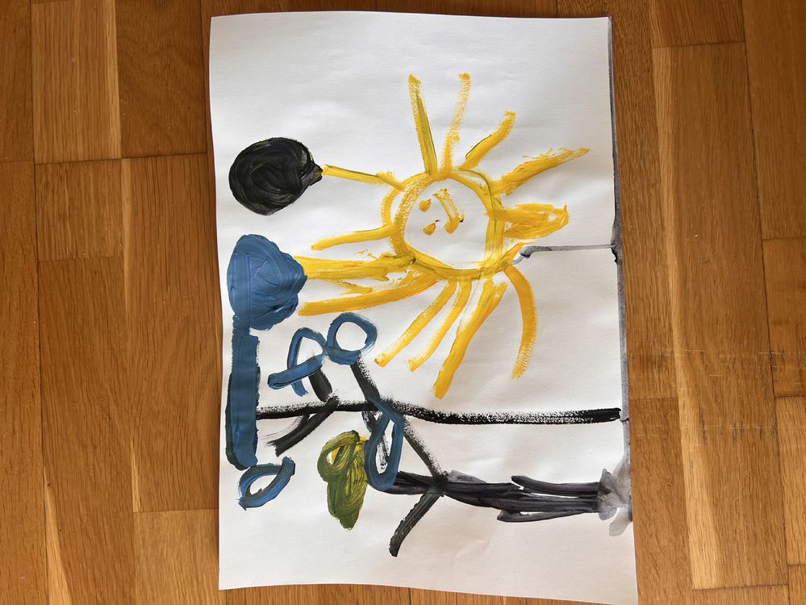

Fábrica de Cuentos
Cursos: 4 i 5 anys · 1r a 3r de Primària
Taller de narrativa, dibujo y libros impartido por Marcos Farina (diseñador gráfico, ilustrador y autor de libros infantiles). Busca involucrar a los niños con los libros desde un lugar activo, motivándolos a contar sus propias historias y a descubrir el placer de crearlas y contarlas a través de imágenes. Se trabaja la expresión oral y la narración, la creatividad, la comunicación a través del dibujo, la estructura básica de un cuento (inicio–medio–final) y el vínculo positivo con los libros y la lectura. El dibujo es la herramienta principal; se exploran también el collage, los sellos y la pintura, y se hacen libros mudos, abecedarios, libros desplegables y libros sábana, individuales y colectivos. Grupo Infantil (4 y 5 años): viernes de 15:00 a 16:30; grupo Primaria (1º a 3º): miércoles de 16:30 a 17:30.